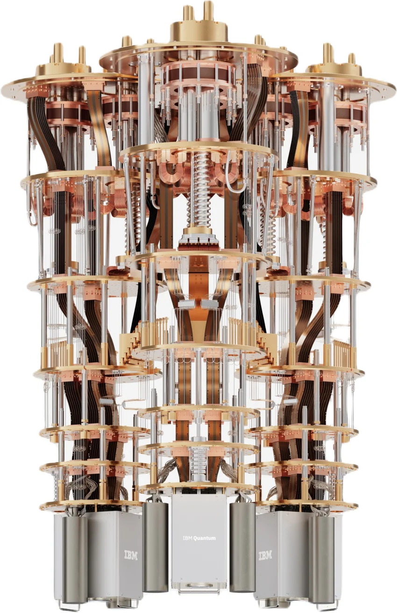

The Future
Quantum computing is one of the most rapidly advancing technologies in our current world, and has improved from IBM's Quantum System One, which is what the majority of this website focuses on. Although the System One computer is most commonly used today in more basic applications, IBM's Quantum System Two is the newest iteration of their quantum computer.
Quantum System Two
IBM's Quantum System Two, released in 2023, is IBM's first modular quantum computer, meaning that it is not a single unit, but can be connected to other computers. It also includes scalable technology that allows for cooler temperatures, lower error rates, and higher qubit counts.

Source: IBM Quantum
The Heron Processor
Quantum System Two is currently running on IBM's new Heron Processors, which contain 133 qubits (the previous Eagle processor used in System One only had 127 qubits). The Heron Processors also have 5 times better error rates than the Eagle Processors, and are accessible on Quantum Composer.
Conclusion
As science and technology continues to progress, countless companies will continue to improve quantum computing in order to achieve the problem-solving abilities of computers that today we can only dream of.